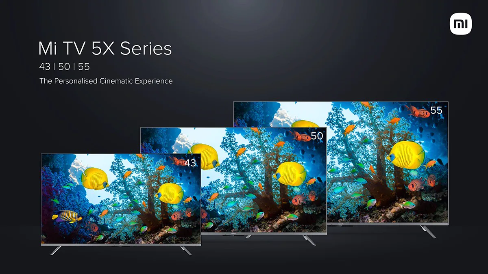

Xiaomi Mi TV 5X 43-inch, 50-inch and 55-inch launched in India, starts at Rs 31,999: When can you buy?

Xiaomi during its Smarter Living 2022 event has launched its latest Mi TV 5X series in India. The series includes three TV variants: 43-inch, 50-inch and 55-inch. All the new Mi TV 5x variants sport a 10-bit 4K display with the company’s new Vivid Picture Engine 2. They feature a metal bezel-less design with over 95 percent screen-to-body ratio.
The new Mi TV 5X lineup comes in three sizes: 43-inch priced at Rs 31,999, 50-inch priced at Rs 41,999 and 55-inch priced at Rs 47,999. The company is yet to reveal the availability details of the new Smart TV series.
Mi TV 5X will be made available in 43-inch, 50-inch and 55-inch variants with 4K panels having a resolution of 3840×2160. The display comes with support for Dolby Vision, HDR 10+, HDR 10 and HLG formats. It comes with a wide colour gamut of DCI P3 94 percent and NTSC 88 percent. The display is encased in a metal design body for durability.The TVs are powered by a 64-bit quad-core A55 CPU paired with a Mali G52 MP2 GPU. It comes with 2GB of RAM along with 16GB of internal storage. I/O options include 3x HDMI 2.1, 2x USB, Ethernet, 1x optical, 1x 3.5mm, AV input and H.265. The TV comes with access to Google Assistant. Moreover, it is the first Indian Smart TV to come integrated with the IMDb platform for ratings, cast details and more for the content you are watching. The TV runs the company’s proprietary PatchWall 4 UI on top of Android TV 10. It comes with features like universal search, kids mode with parental lock, language universe, smart recommendations and more. There are 75+ free live channels as well.